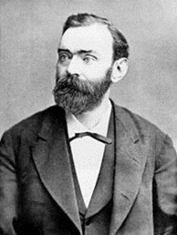

Nobelpriset
En snabb sammanfatting
Nobelpris, vart och ett av de pris som ur en donation av Alfred Nobel årligen utdelas på dennes dödsdag 10 december. I sitt testamente hade Nobel skrivit att huvuddelen av hans förmögenhet skulle bilda en fond vars avkastning skulle gå till pris åt dem ”som under det förlupne året hafva gjort menskligheten den största nytta”. Efter legat och omkostnader uppgick summan till 31 miljoner kr., och en så stor donation väckte givetvis sensation. En livlig diskussion utbröt om testamentets syfte och giltighet. Släktingar protesterade, vissa tidningar angrep själva idén med prisen, och de institutioner som tilldelats uppgiften att dela ut dem kände sig tveksamma. Även kung Oscar II var kritisk, eftersom prisen inte var förbehållna svenskar; Nobel hade uttryckligen skrivit att alla nationaliteter skulle komma i fråga. Det var denna internationella prägel som tillsammans med penningsummans storlek gav prisen så högt anseende från början.
